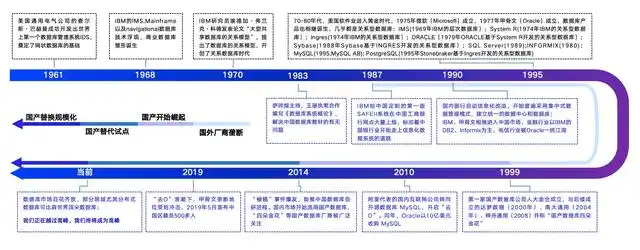

倒计时三年：国产数据库100%替代走到哪了？
上世纪80年代，中国数据库开始萌芽；90年代，IBM、Oracle垄断国内数据库市场；本世纪初，“四朵金花”陆续成立；10年代，互联网公司开启“去O”浪潮；到了20年代，国产数据库已然呈现出“百花齐放”的态势。当前，国产数据库仍在不断追赶与超越。
据国资委2022年发布的文件，截止到2027年，“2+8+N”党政与八大行业要实现数据库的100%国产替代。
如今2024年接近尾声，但面对国产数据库去“IOE”的口号和替换时间表，行业的态度却各有不同，有的企业已经在分享核心系统替换经验，也有企业依然认为替代难度太大，不敢轻易尝试……
目前国产数据库到底能力如何？具不具备市场竞争能力？国产数据库替代倒计时下，各行业的替换进展和成效如何？在历经一系列调研、采访及资料整理后，第一新声摸清了国产数据库行业替代行业画像。
01国产数据库的起步发展：从突破垄断到“百团大战”
国产数据库的发展，大致经历了几个发展关键期：
中国国产数据库发展历程

来源：第一新声研究院
国产技术萌芽期1980s：二十世纪八十年代，萨师煊教授和王珊教授推开了中国数据库领域的大门，培养了中国数据库的第一代人才。
国外厂商垄断期1990s：1989年，Oracle进入中国；1991年，Sybase进入中国；1992年，IBM进入中国；DB2、Informix拿下金融行业市场；1997年，Oracle拿下电信市场。
这一时期的国外数据库几乎垄断了中国数据库市场，占中国数据库市场规模80%以上。但是中国也有了第一代原型数据库，比如东软的Openbase、中软的Cobase和华科的DM Database。
国产厂商萌芽期2000s：基于863、核高基、973计划，人大金仓、武汉达梦、南大通用、神舟通用等一批高校背景国产厂商成立。
进入二十一世纪后，国家的863 计划设立了[数据库重大专项]，有了国家政策的扶持，并称“国产数据库四朵金花”的人大金仓（1999年）、达梦数据库（2000年）、南大通用（2004年）、神州通用（2008年）开始发展。不过在原有的传统关系型数据库领域里，Oracle 和 IBM 的先发优势太大了，当时的环境要求的是经济发展，而不是自主可控，于是国产数据库进入了死循环，没有市场就无法验证数据库是否可靠，无法验证数据库是否可靠那么就没有公司敢用，也就没有市场。
快速发展期2010年至今：云计算时代和开源社区的兴起，国产数据库开始了弯道超车。
万事需要契机，外力也在推动这一切。2014年，“棱镜”事件爆发，行业深刻意识到信息安全的紧迫性以及自主可控的必要性。“四朵金花”等国产数据库被广泛关注。融资的融资，给项目的给项目，国产数据库开始迎来黄金发展期。以前都是背靠产学研这条线，自阿里喊出了“去IOE”的口号，腾讯、百度、华为等互联网和IT巨头也参与到国产数据库的开发之中，国产数据库开始了自身的市场实践之路。与此同时，一系列优秀的数据库和数据库公司诞生了，比如TiDB、OceanBase等，这也造就了2020年国产数据库“百团大战”的盛况。
据资料显示，2015年我国数据库软件市场规模为85.37亿元，2017年我国数据库软件市场规模增长至120.00亿元，其中国产数据库产品市场规模为17.15亿元，国外产品市场规模为103.07亿元，国产数据库产品国内市场份额占比从2009年的4.0%增长至2017年的14.26%。
“去O”浪潮下，甲骨文垄断地位受到冲击，2019年5月宣布中国区裁员500多人，这也标志着国产数据库替换“国进外退”局面的初步形成。
2022年深化阶段：据2022年9月国资委79号文件，截止到2027年“2+8+N”党政与八大行业完成100%国产替代，替换范围涵盖芯片、基础软件、操作系统、中间件等领域。
在信创政策催化下，分布式数据库、云部署等技术不断成熟，国产数据库发展窗口被打开，新旧交替的历史进程按下了加速键。
02党政领域基本完成，金融领域整体替换率不高
国资委79号文件中的“2+8+N”，“2”是指党政，是信创产业发展的首要领域，“8”是金融、电力、电信、石油、交通、教育、医疗、航空航天等关于国计民生的八大行业，也是信创产业发展的重点行业，“N”是指包括消费市场和各种企业级市场，是信创产业未来发展的潜在市场和增长点。
根据第一新声调研，目前党政领域的数据库国产替代率高达80%，已经基本处于替换的尾声阶段。
国产数据库替代在党政领域成功试水后，开始逐步向八大行业稳步渗透。
得金融者得天下。
金融业数据库使用情况一直是数据库产业发展风向标。1998年，IBM DB2、Informix在金融核心系统落地商用，奠定了此后20年大小机在核心系统的格局。如今，金融业成为大小机下移的急先锋。
而国产数据库替换领域一直流传一句话：“金融摸着银行过河，银行摸着石头过河。”
银行领域的国产数据库无痛迁移，成为金融行业乃至整个国产数据库成功替换的关键。数据库作为基础软件，需要几十年如一日的积淀，各大金融业开始了不同场景下的不同程度的业务替换。
越来越多银行核心系统替换成功落地的案例，极大提升了业界对国产数据库的认可，也加速了替换的进程。
此时国家政策的发布如虎添翼。国家发布三年实现金融核心系统的国产替代的目标：经过2019年-2021年三年金融信创试点，2022年金融信创将进入全面推广阶段。国家明确要求第一年实现OA等外围系统的国产替代，第二年实现业务系统的国产替代，第三年实现核心系统的国产替代。同时宣布第一批国产化试点金融机构，包括主要的国有大行、头部券商、交易所等共47家，要求当年新增IT采购的5%实现国产化，第二年实现15%，之后，又有两批机构进入试点，一共接近150家。
时间表已定，各大银行开始稳步推进数据库迁移。据不完全统计，2022年国产数据库46%的采购单位集中在金融领域，其次是政府，占比达18%。这一趋势也延续到了2023年。2024年上半年已经有130多个数据库项目落地，而金融行业集中了近6成的项目，运营商其次，占比超15%。
但根据第一新声调研及不完全统计结果，截至目前，八大行业由于对国产数据库的稳定性、迁移难度、运维难度等方面要求更高，所以整体替换率依然不高。金融行业非核心系统处于40%左右。但即使在政策和市场的加持下，我国整体银行业国产数据库替代约为20%，国外数据库在银行核心系统的占比仍在80%以上。能源行业不足15%，医疗、制造、教育等多个行业甚至不足5%，这距离“2027年’2+8+N’党政与八大行业完成100%国产替代“还有长的一段路要走。
03叫好不叫座：数据库迁移难度大、成本高在首位
叫好不叫座，是目前国产数据库面临的尴尬局面。
特别是在金融领域，国产数据库替代更多还是办公系统和业务系统层面进行尝试，而对核心交易系统的数据库国产化多少还存在犹豫。毕竟金融行业向来倡导“无损运维”，业务架构和代码调整以及不同数据库平滑迁移的风险，让众多大型金融机构不敢贸然在核心系统替换上迈出太大的步子。
首先，在数据层面，数据一致性、数据安全性和代码安全性是最重要的考量因素。尤其在金融和政府等行业，数据安全永远排在第一位。
其次，在功能层面，包括兼容与迁移能力、事务处理能力和大数据实时处理能力。企业最担心的因素是兼容性。因为更换了数据库后，向下需要担心服务器、芯片和操作系统的适配性，向上还要考虑OA、ERP等应用系统的兼容性。
最后，在效果层面，包括稳定性、可靠性与性价比。其中，稳定性也是厂商和机构在选购时最在意的因素。
面对市场抛出的需求，国内数据库厂商则良莠不一。纵观整个数据库替换，从传统集中式数据库向国产化数据库转型升级仍然面临着开源数据风险、应用兼容性、系统可用性、性能和扩展性、迁移成本等一系列挑战。
一是数据库迁移难度大、成本高。这是国产数据库替换首当其冲的问题。主要聚焦在迁移过程中的兼容性、数据安全、停机时间、数据校验和性能保证等；缺乏数据库的一站式管理、运维与备份的复杂度高等也是数据库迁移后维护的一大难题。在迁移成本中，也包括兼容性的问题。一般来说，一家企业完成数据库的国产替代需要花上2～3年的时间，在这过程中需要评估改造难度，一旦兼容性出现问题，损失重大。
二是开源数据库风险。开源数据库在银行业广泛使用，根据第一新声调研，当前我国银行业在用国产数据库中，闭源数据库占比仅为25.6%，大部分国产数据库都是在现有的开源基础上进行修改，国产数据库在研发、专利和代码自主化程度上低都是经常被人诟病的几大难点。但开源数据库存在不同开源协议要求和限制差别较大、安全漏洞、侵权感染、停服断供、政策风险、掌控能力不足等潜在风险。
三是国产数据库生态不完善客观存在。银行引入国产数据库的同时涉及到整个生态系统，包含管理、监控、备份、优化等需要相配套系列上下游伙伴共同推进，当前银行业数据库尚无事实标准和头部企业出现，各家技术选型未确定情况，ISV只能基于oracle标准或MySQL标准。
四是国产数据库性能和功能不完善。相较于Oracle等传统商业数据库，国产数据库在高可用、高性能等方面表现不足。如在业务高峰期存在一定的性能压力，面对复杂情况的漏洞发现和修复能力也差强人意。
国产化对于整个中国科技来说，都是一件重要的事情，但整个市场大部分原因却是被政策催熟，在政策和市场都在全面加速的情况下，国产替换氛围感拉满但产品不给力，替换进程依然堪忧。
04党政领域重心下沉，金融领域进入深水区
走得慢不重要，行稳致远才是关键。
当前，在政策利好和市场推动下，国产数据库依然在各个领域采取积极谨慎态度，调整不同行业的替换节奏。
第一新声在大范围调研后总结出了国产数据库替换两大特征：
一是在党政领域，数据库市场重心由省部级向地市、区县下沉。党政领域内部办公与电子公文在省部级的存量替换已接近尾声，当前向地市和区县大面积下沉，地方政府采购订单逐渐增加。
二是在八大行业，数据库正从非核心、次核心系统向核心突破，不同于党政，八大行业更加注重国产数据库的稳定性，为了防止核心业务风险的出现，前几年国产替换主要以非核心系统为主。以金融业为例，银行核心系统的国产数据库替代率15%左右；证券和保险核心系统的国产数据库替代率不超过20%。相关领域将成为未来三年国产替代的重点。
资本和企业都认为，国产化是中国数据库的绝佳机会，据调研机构Gartner预测，到2025年，中国分析型数据库、交易型数据库来自海外厂商分别将仅剩约30%和50%，国产化的需求如同风浪，正引导国产数据库走向未知。
新王换旧王，远非一日之功。
“2027年完成100%国产化替代”不是终点，更应该是国产化数据库发展的里程碑。正如腾讯云数据库副总经理罗云所说：“国产化之路依然道阻且艰，国产数据库如何在产品服务和生态上全面跟进，需要甲方与乙方的共同合作，耐心应对过程中的坎坷与挑战，才能确保国产化战略的稳步推进。”